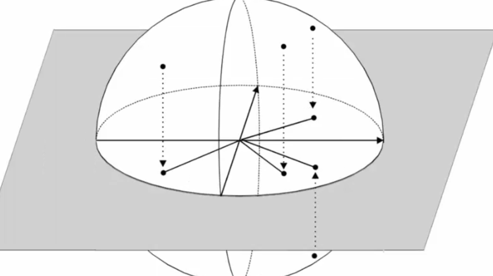
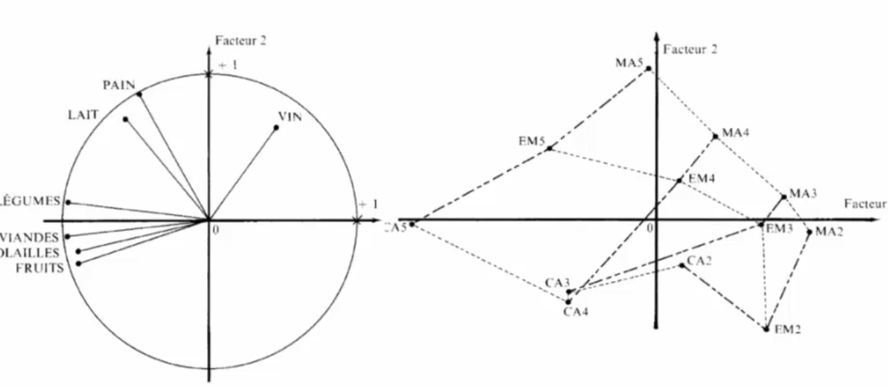
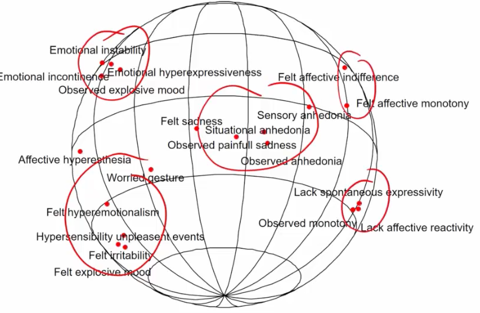
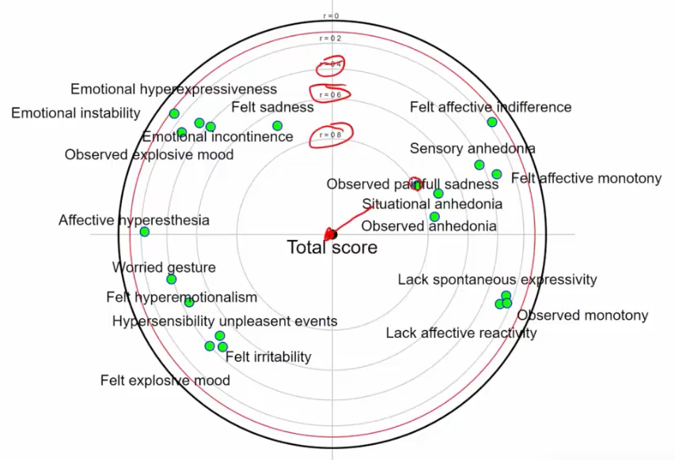

S4 1 Methodes multidimensionnelles 1 : ACP, SPH, ACPf
1 ON REPART DU COURS PRÉCÉDENT
Les points sont sur l’hypersphère :

On les projette sur le premier plan principal :

Si diamétralement opposé : corrélés négativement
Si proches : corrélés positivement
Si perpendiculaires : pas corrélés (indépendants)
1.1 Exemple 1
7 variables ; 1 millions de données
1.1.1 Représentation des variables

Points proches du cercle = bonne qualité de représentation en ACP
Consommation de pain et de lait corrélés
Viande : corrélé positivement à volailles et fruits
Vin : indépendant de volailles / viandes / fruits
1.1.2 Interprétation sociologique
Population riche : Consomme plus de viande, fruits, vin
Population ayant des enfants : Consomme plus de pain et lait
Vin : classes populaires dans les années 50-60 !
1.1.3 Représentations des individus par groupes
On ne représente pas chaque individu (sinon 1 million de points)
On fait des groupes (clustering) et on représente les centres des groupes (centre = moyenne des individus du groupe = barycentre)
\(\rightarrow\) On représente le point moyen de tous les cadres ayant 3 enfants par exemple

MA5 : employé manuel avec 3 enfants (ménage = 5 personnes)
EM5 : employé non manuel avec 3 enfants
MA4 : travailleur manuel avec 2 enfants
CA4 : cadre avec 2 enfants
Et en fait ça s’interprète pareil !!
La où il y a le pain et le lait : c’est les ménages de 5 personnes !
Et à l’opposé : les familles qui ont peu d’enfant
Là ou il y a les légumes / fruits / viande : ce sont les cadres
Vin : surtout employés manuels
Les composantes principales des variables sont proches mathématiquement des composantes principales des sujets !
1.2 Exemple 2 : Échelle de dépression “Depressive mood scale”
Beaucoup de critères qui se ressemblent :

En ACP :

1.2.1 Variances de l’ACP
Variance de l’ACP1 = 24% et variance de l’ACP2 = 21%
Donc les 2 premières composantes capturent 45% de la variance totale = c’est à dire qu’on explique pas mal de données
1.2.2 Inteprétation :
- Distorsion + marquée que précédemment : les points sont plus éloignés du cercle (+ proches du centre)

3 paquets de réponses :
- À gauche : déprimés émoussés
- À droite : déprimés irritables
- En bas : tristesse, anhédonie : “à part” = axe principal de la dépression
Et en fait on peut même interpréter la construction du truc !
ACP1 : axe qui explique le plus la variance = sur lequel les points sont les plus éloignés
Correspond à l’axe des x ici (abscisse)
Sur cet axe : opposition émoussé vs irritable
Et donc on peut dire que cette opposition explique le plus de variabilité du phénotype dépressif
ACP2 : axe qui explique le 2ème plus la variance = axe des y ici (ordonnée)
- Ici : explique l’intensité des symptômes dépressifs
Méthodes approximatives, mais c’est pas si mal !
alpha et beta et p : on pense avoir trouvé quelque chose de scientifique et d’incontournable
toujours un risque ! on sait pas exactement ce que dit le petit p
quand c’est pas vraiment tiré au sort : le petit p est la probabilité que le hasard puisse exprimer a lui seul un effet aussi grand que celui qu’on observe
mais le hasard, c’est qu’on imagine que l’échantillon est tiré d’une population initiale hypothétique infinie !
1.2.3 Représentation sphérique : gagne une dimension

On a l’impression qu’il y a plus de paquets : parce que gagne une dimension !
Questions : ACP
2 Analyse en composante principale focalisée
Projeté sur un plan tangentiel à une des variables


Permet de voir les corrélations mais pas d’infos sur la qualité des variables
3 Références
Vidéo Falissard: